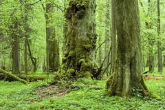

На юго-западе Беларуси расположился один из самых крупных национальных парков в Европе – Беловежская пуща. С 1992 года этот удивительный парк включён в Список памятников Всемирного наследия ЮНЕСКО. Год спустя ему присвоен статус биосферного заповедника. По мнению учёных, Беловежская пуща – остаток первобытного реликтового леса. Сейчас он занимает территорию около 160 тысяч гектаров. Сохранились редкие скальные дубы и единственная в Европе естественная популяция пихты белой. Встречаются деревья-великаны, которым 400-600 лет. Они растут здесь ещё со времён королей и богатых вельмож, которые охотились в прекрасных пущанских угодьях. По числу видов растений и животных Беловежская пуща не имеет себе равных в Европе. Например, в первозданных зарослях обитает самая крупная в мире популяция зубров. Здесь нашли приют волки и рыси, благородные олени и косули, кабаны и барсуки, чёрные аисты и орланы-белохвосты. Многие представители флоры и фауны Беловежской пущи занесены в Красную Книгу Республики Беларусь
